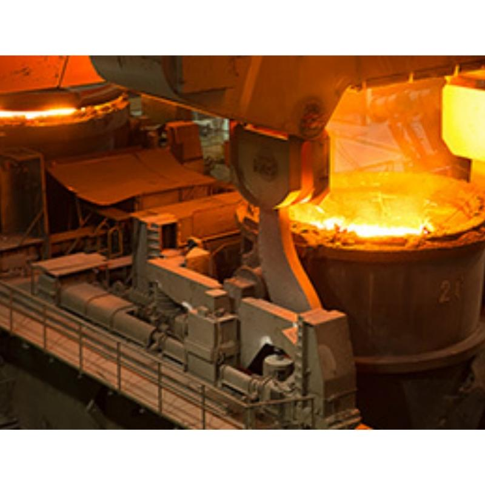
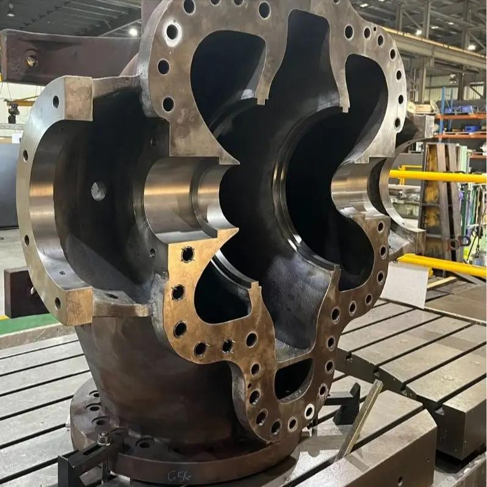
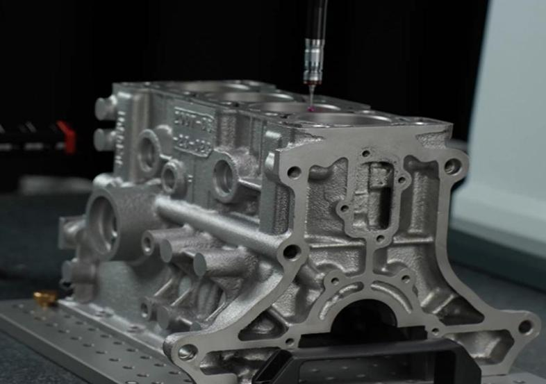
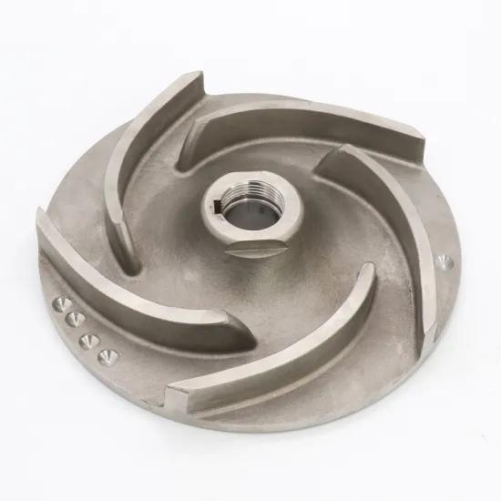

주조
금속 용탕과 주조 관련 제조 현장
MANUFACTURING PROCESS / WONKANG METAL
주조·가공·검사 공정의 현장 이미지와 정보를 확인할 수 있습니다.
01 / PROCESS
아래는 메인페이지에서 사용한 공정 관련 이미지로, 모든 제품이 동일한 순서로 제조된다는 뜻은 아닙니다.
금속 용탕과 주조 관련 제조 현장

제품 형상을 준비하는 제작 단계

용탕과 금속 소재를 다루는 제조 영역

스테인리스 주강 제조 영역

주조 제품을 후속 가공하는 설비

제품 형상을 확인하는 기술

제품 검사·측정 관련 설비

금속 부품의 완성 형태
02 / INTEGRATED PRODUCTION
제조 흐름을 세 가지 핵심 영역으로 구분했습니다.
용해·주조를 거쳐 금속 부품의 기본 형상을 구현합니다.
주조 후 요구 형상과 치수에 맞게 후속 가공을 진행합니다.
검사와 측정을 통해 제조 결과를 확인하는 영역입니다.
CONTACT / WONKANG
제품·공정 및 제조 협력에 관한 문의는 사이트에 게시된 연락처를 확인해 주세요.